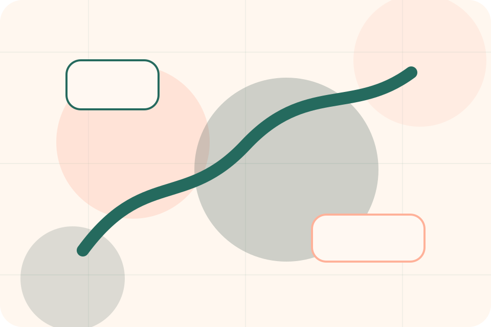
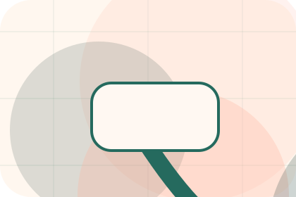
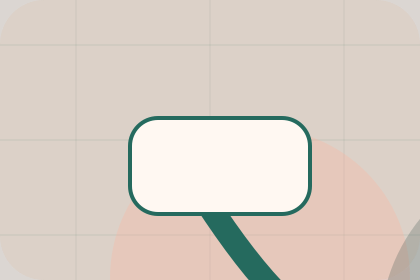

Services / 01
Services by Paw
Services shaped for pets, animals & veterinary services decisions.
Services opens as a clear pets decision hub: what Paw offers, who it helps, why it matters, and which route to take first.
The first screen combines positioning, proof, primary action, and fast internal navigation, so people can act immediately or compare the rest of the services route with context.
Clear intakeHuman follow-upPractical reassurance
Warm appointment hero
Route the care need
Select the closest route and Paw keeps the next step, proof, and follow-up expectation aligned with care and quick triage.

Services / 02
Compare service routes
Checkups explains the practical scope, best-fit situations, and expected outcome so pets visitors can compare options without decoding jargon.
The section keeps the offer concrete: what is included, who it is best for, what decision it supports, and which linked route gives the deeper detail.
Explore ServicesBest Fit
Who should use checkups and when it belongs in the services journey.
What Changes
The practical benefit visitors should expect after choosing this route.
Deeper Route
Where to compare details, pricing, support, or contact options before committing.
Services / 03
Compare service routes
Vaccines explains the practical scope, best-fit situations, and expected outcome so pets visitors can compare options without decoding jargon.
The section keeps the offer concrete: what is included, who it is best for, what decision it supports, and which linked route gives the deeper detail.
Explore ServicesBest Fit
Who should use vaccines and when it belongs in the services journey.
Services / 04
Compare service routes
Dental explains the practical scope, best-fit situations, and expected outcome so pets visitors can compare options without decoding jargon.
The section keeps the offer concrete: what is included, who it is best for, what decision it supports, and which linked route gives the deeper detail.
Explore ServicesBest Fit
Who should use dental and when it belongs in the services journey.
What Changes
The practical benefit visitors should expect after choosing this route.
Deeper Route
Where to compare details, pricing, support, or contact options before committing.
Services / 05
Compare service routes
Surgery explains the practical scope, best-fit situations, and expected outcome so pets visitors can compare options without decoding jargon.
The section keeps the offer concrete: what is included, who it is best for, what decision it supports, and which linked route gives the deeper detail.
Explore Services- 01
Best Fit
Who should use surgery and when it belongs in the services journey.
- 02
What Changes
The practical benefit visitors should expect after choosing this route.
- 03
Deeper Route
Where to compare details, pricing, support, or contact options before committing.
Services / 06
Compare service routes
Diagnostics explains the practical scope, best-fit situations, and expected outcome so pets visitors can compare options without decoding jargon.
The section keeps the offer concrete: what is included, who it is best for, what decision it supports, and which linked route gives the deeper detail.
Explore ServicesBest Fit
Who should use diagnostics and when it belongs in the services journey.
What Changes
The practical benefit visitors should expect after choosing this route.
Deeper Route
Where to compare details, pricing, support, or contact options before committing.
Services / 07
Compare service routes
Prevention explains the practical scope, best-fit situations, and expected outcome so pets visitors can compare options without decoding jargon.
The section keeps the offer concrete: what is included, who it is best for, what decision it supports, and which linked route gives the deeper detail.
Explore Services
Best Fit
Who should use prevention and when it belongs in the services journey.
Services / 08
Benefits: the better state
Benefits defines the better state Paw is built to create, with enough detail to make the promise believable.
A veterinary site with warm urgent-care modules, appointment paths, team proof, and symptom routing. The section grounds that direction in concrete benefits, visible tradeoffs, and a next route visitors can use when the promise feels relevant.
Explore ServicesBetter State
Benefits defines what becomes clearer, easier, or safer when Paw is the chosen route.
Practical Gain
The benefit is tied to care and quick triage, not a vague quality claim.
Proof Route
Visitors get a linked path to compare the promise against services, standards, or examples.
Services / 09
Compare service routes
Safety explains the practical scope, best-fit situations, and expected outcome so pets visitors can compare options without decoding jargon.
The section keeps the offer concrete: what is included, who it is best for, what decision it supports, and which linked route gives the deeper detail.
Explore Services- 01
Best Fit
Who should use safety and when it belongs in the services journey.
- 02
What Changes
The practical benefit visitors should expect after choosing this route.
- 03
Deeper Route
Where to compare details, pricing, support, or contact options before committing.
Services / 10
Book Visit
Paw closes the services route with a clear action, a quick reminder of the value, and a low-friction way to book a visit.
Visitors who are ready can use the primary action. Visitors who are still comparing can scan the section links, proof, and support routes before they book a visit.
Book VisitThe final block keeps the choice simple: act now, compare one more proof route, or send enough detail for a focused response.
Book Visitcare and quick triage
Book Visit
A veterinary site with warm urgent-care modules, appointment paths, team proof, and symptom routing. Services ends with a direct path to book a visit, plus enough context for visitors who still need to compare.

Book VisitImportant notes before you act
Pet health content is general; urgent symptoms require direct veterinary care.